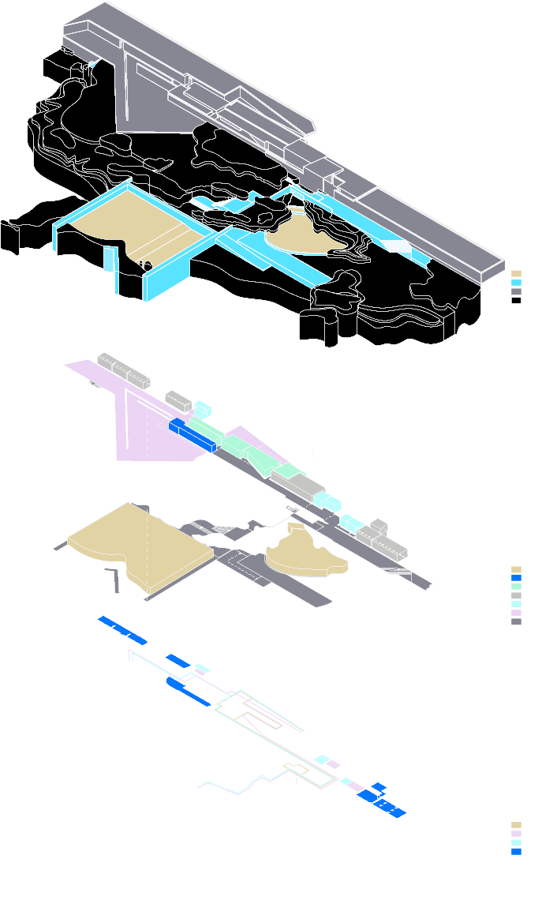
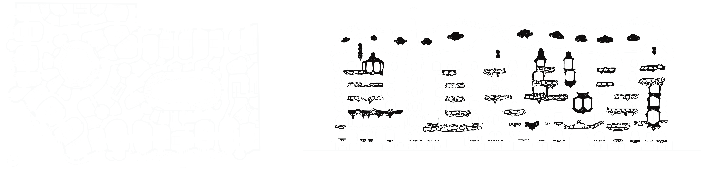

Architecture Coursework
While studying at the University of Chicago, I spent a year at the Architectural Association School of Architecture in London. There, I picked up technical drawing and visualisation skills through a project-based curriculum. To the left, are fragments of two projects: the first is a study of the Leça Swimming Pools by Álvaro Siza Vieira, and the other is a study of Casa Milà by Antoni Gaudí.